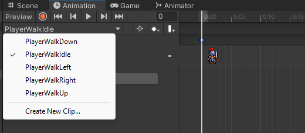
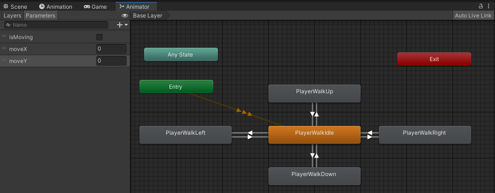
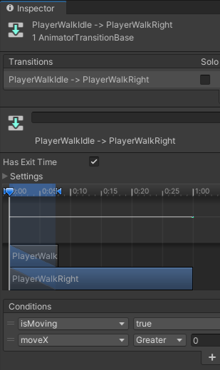
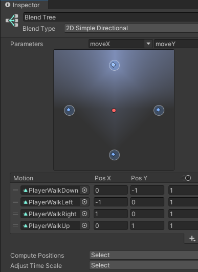
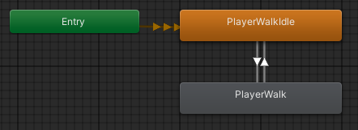

2D-Roolipeli
Tässä työssä kokeillaan Tilemap-työkalua kentän rakentamisessa. Opitaan pilkkomaan kuva pienempiin osiin. Pelihahmolle tehdään yksinkertainen animaatio.
Uusi projekti ja kuvat
- Aloita 2D-projekti, nimeä järkevästi
- Lisää kansio Assets / Art, tuo tänne kolme kuvaa ( knight, knight 2, ground ja water )
{kind=link}
{kind=link}
{kind=link}
{kind=link}
Kuvien pilkkominen
Kuvat ovat kooltaan 600px x 600 px. Tehdään isosta ruohikosta yhdeksän kuvaa jotka jokainen kooltaan 200px x 200px. Kuvan pilkkominen tapahtuu näin:
- Valitse kuva Art-kansiostasi. Asetetaan Inspector-ikkunassa ominaisuudet.
- Texture Type Sprite (2D and UI)
- Sprite Mode: Multiple
- Pixels Per Unit 200 (koska kuva 200 x 200)
- Filter Mode: Point (no filter) ja paina Apply
- Paina nappia Sprite Editor
- tee kuvasta 3 x 3 kokoinen

- paina Slice ja lopuksi Apply
- tee kuvasta 3 x 3 kokoinen
Lopputuloksena Art-kansiossasi on yksi kuva jaettuna yhdeksään osaan
Pelialueen rakentaminen
Tilemap
Tilemap ja Tilepalette ovat tapa rakentaa pelialue kuvista "maalaamaalla".
- Hierarchy: hiiren oikea / 2D Object / Tilemap / Rectangular
Ilmestyy ruudukko pelialueelle. Palaamme hetken kuluttua maalaamaan tänne pelialueen.
Tile Palette
Avataan Tile Palette-työkalu: Window / 2D / Tile Palette
- Valitse Create New Palette, anna nimeksi esim. RPGPalette ja tallenna se kansioon Tilemap
Tämän jälkeen raahaa kuvat Art-kansiosta osaksi palettiasi, tallenna jokainen Tile kansioon Tilemap (tarkenne .asset).

Nyt voit palata takaisin Hierarchy-ikkunan Tilemapille. Pidä TilePalette auki ja varmista että sinulla on valittuna jokin paletin kuvista sekä maalipensseli. Kokeile maalata pelialue Scene-näkymässä.
Lisätään Tilemap-objektille komponentiksi Tilemap Collider 2D
- valitse Assets / Tilemap-kansiosta ne tiilet joissa pelaaja ei törmää
- aseta niissä Collider Type - None. Käytännössä ainoastaan vesi olisi sellainen johon pelaaja
törmää.

- Testaa toiminta.
Tilemap-objektin Order in layer kannattaa asettaa arvolle -1 jotta lisättävä pelaaja varmasti näkyy sinulle.
Pelihahmo ja animaatio
- Lisää uusi tyhjä GameObject ja nimeä se Player
- Älä lisää kuvaa pelaajalle tässä vaiheessa. Lisää kuitenkin Rigidbody2D, aseta Kinematic tai Mass arvolle 0.
- Lisää Player-pelihahmolle uusi komponentti Animator
- Lisää Project-valikossa uusi kansio Assets / Animations
- Lisää Animations-kansiossa Animation Contoller: hiiren oikea / Create / Animation Controller, nimeä esim. PlayerAnimationContorller.
- Lisää Player komponentin Animator ominaisuus Controller / PlayerAnimationController.
- Seuraavaksi luodaan animaatio kävelylle. Avaa Window / Animation / Animation
- valitse Player-GameObject ja paina Create, tallenna animaatio kansioon Animations nimellä
PlayerWalkRight.anim

Raahaa ensimmäinen kuva jossa pelaaja kävelee oikealle kohtaan 0:00, raahaa toinen kuva esimerkiksi kohtaan 0:15. Voit testata Play-painikkeella animaation toimintaa.
Tee myös muut animaatiot hahmon liikkeelle (hahmo paikallaan, kävely vasemmalle, kävely ylös ja kävely alas). Valitse yksitellen kohta Create New Clip... ja tallenna animaatio samaan kansioon uudella nimellä (esim. PlayerWalkUp.anim)
- Avaa Animator ja määritä Parametrs-kohdassa kolme muuttujaa: float moveY, float moveX, bool
isMoving. Määritä tilat (State) ja aseta hiiren oikealla PlayerIdel oletustilaksi. Tee siirtymät
(Transitions) hiiren oikealla painikkeella.

-
Muuttujien avulla määritellään siirtymälle ehdot. Valitse esimerkiksi siirtymä PlayerIdlestä
PlayerWalkRigh, tämän jälkeen lisää +-painikkeella uusi ehto.
- Oikelle siirtymä kun isMoving true ja moveX suurempi kuin 0
- Paluu takaisin kun isMoving false

Animaatiot ovat olemassa mutta pelaajalta puuttuu vielä liikkuminen eikä tietoa liikkeestä välitetä Animator-komponentille. Lisätään pelaajalle skripti.
PlayerScript.cs
public class PlayerScript : MonoBehaviour
{
private Rigidbody2D rb;
private Animator animator;
public float speed;
void Start()
{
// Pelaajan komponentit:
animator = GetComponent<Animator>();
rb = GetComponent<Rigidbody2D>();
}
void FixedUpdate()
{
float moveX = Input.GetAxis("Horizontal");
float moveY = Input.GetAxis("Vertical");
bool isMoving = Mathf.Abs(moveX) > 0.1f || Mathf.Abs(moveY) > 0.1f;
rb.velocity = new Vector2(moveX * speed, moveY * speed);
// tiedot Animator-komponentille:
animator.SetBool("isMoving", isMoving);
animator.SetFloat("moveX", moveX);
animator.SetFloat("moveY", moveY);
}
}
Kokeile ohjelman toimintaa, testaa tulevatko animaatio käyttöön.
Blend Tree
- Mene Animator-ikkunaan.
- Luo uusi state: Create State / From New Blend Tree
- Nimeä se esimerkiksi: PlayerWalk
- Tuplaklikkaa Blend Treeä, jolloin pääset sen sisälle.
- Valitse Inspector-ikkunassa Blend Tyle / 2D Simple Directional
- Blend Treen kohdassa Motion paina + ja lisää neljä Motion Fieldiä. Huomaa Parameters-kohdassa moveX ja moveY.

- Muuta Animator Base Level. Poista liikkumiseen liittyvät tilat ja korvaa ne PlayerWalk-tilalla.
Liitä transitions, ehdoksi vain isMoving true tai false.

Örkki
Voit lisätä vielä örkin mukaan pelillesi (orc.png)
Tässä örkki kulkee edes takaisin ja vaihtaa suuntaa. Blend Treessä käytetty samaa animaatiota jossa hahmo liikkuu vasemmalle ja käännetään se koodissa.
OrcScript.cs
public class OrcScript : MonoBehaviour
{
private Rigidbody2D rb;
private Animator animator;
public float speed;
private int direction;
private bool facingRight = false;
void Start()
{
animator = GetComponent<Animator>();
rb = GetComponent<Rigidbody2D>();
direction = -1;
speed = 1.5f;
}
void FixedUpdate()
{
if (transform.position.x > 5f) {
direction = -1;
Flip();
}
else if (transform.position.x < -5f) {
direction = 1;
Flip();
}
rb.velocity = new Vector2(direction * speed, 0);
// tiedot Animator-komponentille:
animator.SetBool("isWalking", true);
animator.SetFloat("moveX", direction);
}
void Flip() {
facingRight = !facingRight;
Vector3 Scaler = transform.localScale;
Scaler.x = Scaler.x * -1;
transform.localScale = Scaler;
}
}